ЦНИИЭП учебных зданий
Госгражданстроя
Пособие
по
проектированию
общественных
зданий
и сооружений
(к СНиП 2.08.02-85)
Москва 1988
Рекомендовано к изданию секцией Научно-технического совета ЦНИИЭП учебных зданий.
Пособие по проектированию общественных зданий и сооружений (к СНиП 2.08.02-85)/ЦНИИЭП учебных зданий. - М.: Стройиздат, 1988. - 56 с.
Изложены объемно-планировочные и конструктивные решения и противопожарные требования при проектировании общественных зданий и сооружений. Даны примеры расчета.
Для проектировщиков.
В скобках указаны соответствующие номера пунктов, таблиц и формул СНиП 2.08.02-85, к которым даются пояснения.
Пособие разработано ЦНИИЭП учебных зданий - канд. техн. наук З.И. Эстров, канд. архит. Н.С. Шакарян, инж. В.С. Вольман, канд. архит. Е.Н. Зайченко при участии инженеров В.М. Бычковской, О.А. Люлихиной;
ЦНИИЭП торгово-бытовых зданий и туристских комплексов (архитектор А.Б. Варшавер),
ЦНИИЭП им. Б.С. Мезенцева (архитектор Д.Г. Копелянский, канд. архит. И.И. Лернер);
ЦНИИЭП инженерного оборудования - инженеры Л.И. Вайсман, Ю.М. Соснер;
ЛенЗНИИЭП (канд. архит. Э.С. Боровицкий, инж. Ю.Н. Ионов, канд. архит. Н.Я. Лейбошиц, канд. архит. Ю.Н. Лобанов, архитектор Р.М. Попова, инж С.С. Шмелева);
ВНИИПО МВД СССР - инж. В.П. Власов, кандидаты техн. наук В.М. Есин, Б.И. Кашолкин, Е.А. Мешалкин;
ЦПКБ по лифтам - инж. С.М. Ройтбурд,
МИСИ им. В.В. Куйбышева - д-р техн. наук В.В. Холщевников.
В разработке Пособия приняли участие: инспектор - врач Главного санитарно-эпидемиологического управления Минздрава СССР Г.М. Осадчий и мл. научный сотрудник НИИ общей и коммунальной гигиены им. А.С. Сысина, Л.М. Текшева.
1.1. Разработку индивидуальных проектов общественных зданий и сооружений и привязку типовых проектов необходимо выполнять с учетом климатических, геологических, демографических, национально-бытовых и других местных условий конкретного города, поселка, сельского населенного пункта.
Для типового проектирования общественных зданий принято следующее укрупненное районирование территории страны:
а) IA, IБ и IГ климатические подрайоны;
б) IB подрайон, II и III климатические районы;
в) IV климатический район.
Для строительства в IД подрайоне при наличии вечномерзлых грунтов или расчетной зимней температуры ниже - 45 °С используются типовые проекты, предназначенные для IA, IБ и IГ подрайонов, а на остальной территории - для IB подрайона.
Для объектов массового строительства разрабатываются типовые проекты, рассчитанные на различные природные условия: наличие сейсмики 7, 8 и 9 баллов, просадочные грунты, подрабатываемые территории.
1.2. (1.2). При переменных планировочных отметках земли этажи или часть этажей считаются надземными, цокольными или подвальными, если не менее 70 % площади этажа или рассматриваемой части этажа соответствуют определению, приведенному в п. 1.2 СНиП 2.08.02-85.
Холодное подполье с круглогодичной естественной вентиляцией (подполье для проветривания) устраивается под зданиями, проектируемыми для строительства на вечномерзлых грунтах с использованием их в мерзлом состоянии в течение всего периода эксплуатации (принцип 1). В этом случае техническое подполье или технический этаж для размещения инженерных сетей рекомендуется устраивать выше подполья для проветривания. При небольших габаритах здания в плане допускается размещать инженерные сети в толще перекрытия над подпольем для проветривания без устройства технического подполья или технического этажа (рис. 1, а и 1, б).
Рис. 1. Цокольно-фундаментная часть здания каркасной конструкции (1 принцип строительства)
а - при техническом подполье или техническом этаже над подпольем для проветривания; б - при совмещенном перекрытии над подпольем для проветривания; 1 - подполье для проветривания; 2 - ригели цокольного перекрытия; 3 - пустотная панель перекрытия; 4 - утеплитель; 5 - техническое подполье или технический этаж; 6 - колонна; 7 - стакан-подколонник, 8 - ростверк; 9 - сваи; в - решение цокольной части здания на примере общественного центра.
1.3. (пп. 1.4, 1.5). В практике проектирования общественных зданий кроме показателей общей и нормируемой площади применяются также такие показатели, как полезная площадь, строительный объем и площадь застройки здания.
Полезная площадь общественного здания определяется как сумма площадей всех размещаемых в нем помещений, а также балконов и антресолей в залах, фойе и т.п., за исключением лестничных клеток, лифтовых шахт, внутренних открытых лестниц.
Правила определения строительного объема и площади застройки общественных зданий приведены в прил. 1.
2.1. (Разд. 2). Вместимость (пропускная способность) общественных зданий принимается в соответствии с функциональными требованиями и исходя из норм расчета, установленных СНиП II-60-75**.
Проектирование общественных зданий и сооружений в городах и других населенных пунктах рекомендуется увязывать с организацией подъездов общественного и другого транспорта, с размещением остановочных пунктов и стоянок, устройством удобных и безопасных путей движения пешеходов.
Необходимо стремиться к тому, чтобы архитектурно-композиционные решения общественных зданий соответствовали их градостроительному значению.
При проектировании общественных зданий и сооружений необходимо соблюдать требования по охране и улучшению окружающей среды с учетом региональных особенностей района строительства.
2.2. (2.1). При проектировании зданий со стилобатом желательно предусматривать доступ пожарных с автомеханических лестниц в этажи высотной части здания.
2.3. (2.2). Высота этажа общественного здания принимается по нормам проектирования жилых зданий в тех случаях, когда здание или его обособленная часть предназначены главным образом для размещения жилых помещений, например, спальные корпуса учреждений отдыха, жилая часть гостиниц, спальные корпуса школ-интернатов и т.п. При размещении в общественном здании одной или двух квартир для персонала и при невозможности их размещения в обособленной части здания высота этажа принимается по нормам проектирования общественных зданий.
Высоту этажа небольших общественных зданий, предназначенных в основном для строительства в сельской местности, допускается принимать равной высоте этажа жилых зданий. Перечень таких зданий приведен в ВСН по проектированию различных видов общественных зданий.
Рис. 2. Компактное решение здания (на примере общеобразовательной школы) с одним входом и двойным тамбуром, обеспечивающим изменение направления движения.
Рис. 3. Фрагмент (вход в здание)
1 - холодный тамбур; 2 - теплый тамбур; 3 - помещение теплозавесы
Рис. 4. Решение входа в здание (на примере общественного центра) с устройством двойного тамбура: а - план; б - разрез
2.4. (2.3). Высоту подполья при отсутствии в нем оборудования, требующего постоянного обслуживания персоналом (насосы, вентиляторы, элеваторы, задвижки и т.п.), можно принимать не менее 1,6 м до низа выступающих конструкций перекрытия.
2.5. (2.7). В IA, IБ и IГ климатических подрайонах с сильными ветрами переменного направления возможно устройство дополнительных наружных тамбуров с двумя входами с разных сторон для использования одного из них в зависимости от направления ветра. Необходима также защита входов в здание ветроотбойными стенками.
При проектировании входов в здания, строительство которых осуществляется при использовании вечномерзлых грунтов в качестве основания по принципу 1, рекомендуется уменьшать высоту наружных крылец, перенося часть ступеней внутрь здания.
Примеры устройства входов в здания приведены на рис. 2 - 5.
2.6. (2.8). Высоту ограждения наружных лестниц и площадок спортивных сооружений, кинотеатров, театров, клубов и магазинов рекомендуется принимать не менее 1,2 м, а остальных зданий не менее 0,9 м. При ширине наружных лестниц более 2,4 м желательно предусматривать промежуточные поручни.
2.7. (2.10). Нормы площади гардеробных, приведенные в СНиПе, не распространяются на гардеробные с самообслуживанием (школы, школы-интернаты, профтехучилища и др.), которые следует проектировать по соответствующим ВСН.
При проектировании гардеробных для обслуживающего персонала общественных зданий, когда требуется устройство индивидуальных шкафчиков для переодевания, следует руководствоваться соответствующими СНиПами.
2.8. (2.12). При проектировании санитарных узлов рекомендуется использовать нормали их планировки (НП-204-73).
Расчет количества приборов в уборных и душевых приведен в ВСН по проектированию различных общественных зданий.
Рис. 5. Решение входа в здание (на примере детских яслей-сада) с устройством двойного тамбура
1 - тамбур саночный, 2 - тамбур отапливаемый, 3 - спальня, 4 - групповая, 5 - раздевальная
Рис. 6. Схема планировки кинопроекционного комплекса конференц-зала
А - тамбур, Б - проекционная; В - перемоточная
2.9. (2.15). В этом пункте приведен перечень помещений, которые допускается проектировать без естественного освещения в дополнение к СНиП II-4-79 «Естественное и искусственное освещение». Так, например, согласно СНиП II-4-79 в коридорах, проходах и переходах общественных зданий допускается не предусматривать естественное освещение. В тех случаях, когда коридоры проектируют с естественным освещением, следует руководствоваться п. 2.16 СНиП 2.08.02-85.
Приведенный в п. 2.15 СНиПа перечень помещений может быть дополнен в ВСН по проектированию различных видов общественных зданий. Нормы освещенности помещений приведены в СНиП II-4-79.
В зальных помещениях без естественного освещения, размещаемых в подвальных этажах, рекомендуется предусматривать аварийное эвакуационное освещение, отвечающее требованиям СНиП II-4-79.
Дымоудаление из таких помещений желательно предусматривать в соответствии с требованиями п. 3.26 СНиП 2.08.02-85.
Выход в первый этаж из актовых и конференц-залов, лекционных аудиторий и кулуаров, торговых залов, салонов для посетителей предприятий бытового обслуживания, размещенных в подвальных и цокольных этажах, рекомендуется предусматривать по обособленным лестничным клеткам, расположенным на расстоянии не менее 6 м от других лестничных клеток.
Отделку стен и потолков таких помещений желательно предусматривать в соответствии с требованиями к залам вместимостью 1500 мест и более.
2.10. (2.18). Схема планировки кинопроекционного комплекса конференц-зала и других кинофицируемых залов общественных зданий (за исключением зрительных залов кинотеатров, клубов и др.) приведена на рис. 6.
2.11. (2.21). Наименьшая этажность и другие условия, при которых должны устанавливаться пассажирские лифты, оговорены в нормах на проектирование общественных зданий.
Без выполнения расчета установка пассажирских лифтов в зданиях может быть осуществлена в следующих случаях:
при этажности меньшей, чем указано в нормах;
когда лифты устанавливаются для выполнения специальных технологических целей (служебно-хозяйственные лифты гостиниц и турбаз; лифты для транспортирования аптечных товаров, белья, отходов лечения в больницах и для других подобных целей);
|
Буквенное обозначение параметров (размеры метрах) |
|||||||
|
а |
б |
в |
г |
д |
е, не менее |
и |
|
|
Для 35 мм кинопроекторов с ксеноновыми лампами |
4,2 |
3,5 |
1,5 |
1,2 |
2,3 |
0,8 |
2,6 |
|
Для 35 мм кинопроекторов с лампами накаливания |
3,4 |
2,7 |
- |
- |
- |
0,8 |
2,6 |
|
Для 16 мм стационарного кинопроектора |
2,2 |
2,7 |
- |
_ |
- |
0,8 |
2,6 |
Величина параметров принята в соответствии с нормами на проектирование кинотеатров, когда число и параметры лифтов, необходимые для установки в здании, оговорены в нормативном документе или в пособии к нему.
2.12 (2.21). Расчет вертикального транспорта включает:
составление схем движения пассажирских потоков (далее - пассажиропотоков);
определение расчетных пассажирских потоков в разные периоды функционирования зданий;
размещение лифтовых узлов в плане здания;
решение вопросов о взаиморасположении лифтов и организации их работы;
выбор интервала движения пассажирских лифтов в соответствии с требуемым уровнем комфортности обслуживания пассажиров в здании;
определение расчетного заполнения кабины пассажирских лифтов и предварительный выбор типоразмера лифта по грузоподъемности и скорости в соответствии с требуемым уровнем комфортности обслуживания пассажиров в здании;
расчеты с целью определения необходимого для установки в здании числа и параметров лифтов;
технико-экономический анализ результатов расчета различных вариантов систем вертикального транспорта и выбор проектного варианта.
В многоэтажных зданиях с интенсивными пассажиропотоками при необходимости установки большого числа лифтов выбор их числа и параметров с определением показателей работы вертикального транспорта (времени ожидания для пассажиров, времени поездки, длины очереди) рекомендуется выполнять методами моделирования с использованием ЭВМ. Указанная работа по заказам может быть выполнена головной научно-исследовательской организацией по лифтам.
Исходные данные для расчета вертикального транспорта:
высота подъема лифтов;
число и назначение этажей;
технология функционирования здания;
характеристика помещений, расположенных на этажах и непосредственно влияющих на величины пассажирских или транспортных потоков;
характеристика каждого вида потока, перевозимого пассажирскими лифтами;
требуемый уровень комфортности обслуживания пассажиров в здании.
Методические основы расчета вертикального транспорта (лифтов) приведены в прил. 2. Там же приведены основные понятия (термины), применяемые при проектировании и расчете вертикального транспорта (лифтов).
2.13. (2.21). При размещении в здании грузового лифта, используемого для транспортирования людей, следует иметь в виду, что система управления таким лифтом не предусматривает выполнение лифтом попутных остановок по вызовам. По вызовам с этажа может прийти только освободившаяся кабина.
При установке рядом двух и более таких грузовых лифтов они не могут быть объединены системой группового управления, так как каждый из них работает обособленно и имеет собственные вызывные кнопочные посты на этажах.
2.14. (2.21). Номенклатура пассажирских лифтов, которые могут устанавливаться в общественных зданиях и сооружениях, приведена в ГОСТ 5746-83*.
Система управления лифтами для общественных зданий согласно ГОСТ 5746-83* «смешанная собирательная в двух направлениях», т.е. на каждом этаже имеется кнопка вызова для остановки лифта, для движения вверх и для движения вниз (на нижней остановке кнопка вызова только для движения вверх, а на верхней остановке - только для движения вниз). Группа лифтов (см. прил. 2) оснащается системой группового управления. В этом случае на каждом этаже устанавливается один вызывной кнопочный пост на группу лифтов. На появившийся вызов система группового управления направляет один из лифтов группы, что обеспечивает минимальное время ожидания для пассажиров, исключает движение на один вызов нескольких лифтов, улучшает эксплуатационные показатели лифтов.
2.15. (2.21). Система управления лифтами общественных зданий обеспечивает их работу в режиме «пожарная опасность». Режим «пожарная опасность» включается автоматически по сигналу от автоматической пожарной сигнализации здания независимо от нагрузки и направления движения кабины лифта и обеспечивает принудительное движение лифта на основной посадочный этаж (за исключением случаев, когда лифт стоит на остановках ниже основного посадочного этажа).
По прибытии на основной посадочный этаж двери кабины лифта открываются и остаются в открытом положении. Возвращение системы управления лифтами в нормативный режим работы может быть произведен только из машинного помещения.
Режим «пожарная опасность» обеспечивает безопасность пассажиров, находящихся в лифтах, во время возникновения пожара в зданиях.
2.16. (2.21). При проектировании лифтов в зданиях необходимо выполнять требования правил устройства и безопасности эксплуатации лифтов. По этим правилам расположение шахт лифтов над проходами и помещениями, в которых смогут находиться люди, допускается только в тех случаях, когда перекрытие, расположенное под шахтой, способно выдержать удар противовеса, свободно падающего с наибольшей возможной скоростью.
2.17. (2.21). В комплект проектной документации на здание и сооружение должен входить чертеж на заказ лифтов, оформленный в соответствии с требованиями производителя лифтов.
2.18. (2.21). В зданиях, имеющих более 2 лифтов, желательно предусматривать диспетчерский контроль за работой лифтов. Диспетчерское оборудование можно размещать в отдельном помещении или в диспетчерской другого инженерного оборудования здания. Диспетчерская может обслуживать группу зданий.
2.19. (2.21). В зданиях, имеющих более 2 лифтов, желательно предусматривать помещение для размещения мастерской по ремонту лифтов. Это помещение допускается размещать в подвальных и цокольных этажах. Помещение для мастерской по ремонту лифтов может быть предусмотрено на группу рядом расположенных зданий.
2.20. (2.21). Выбор типа, грузоподъемности, скорости и размеров кабин грузовых лифтов должен производиться с учетом технологических требований, максимальной массы и габаритов грузов и сопровождающих их людей, а также величин грузопотоков.
В случаях, оговоренных в ВСН на проектирование различных видов общественных зданий, выбор грузовых лифтов должен быть обоснован расчетом.
2.21. (2.21). Размеры лифтовых холлов и тамбуров перед грузовыми лифтами должны быть не меньше внутренних габаритов шахты и позволять доставку и размещение грузов со средствами транспорта, доставляющими эти грузы. Двери шахт грузовых лифтов не должны выходить наружу из зданий и сооружений. При необходимости загрузки и разгрузки лифта с улицы перед его дверями устраивается тамбур с дверями, предохраняющий лифт от атмосферных осадков и обеспечивающий нормативные условия для работы лифта.
Рис. 7, Схема зонной организации работы лифтов
1 - группа лифтов, обслуживающих нижнюю зону; 2 - группа лифтов, обслуживающих верхнюю зону; 3 - этаж (этажи) пересадки. Остановка лифтов, обслуживающих верхнюю и нижнюю зоны; 4 - основной посадочный этаж; м. о. - машинное отделение лифтов; Нн.з. - высота подъема лифтов в нижней зоне, м; Нв.з. - высота подъема лифтов в верхней зоне, м; Нэ - высота экспрессной зоны, м; N1 н.з. - число возможных остановок лифтов в нижней зоне; N1 в.з. - число возможных остановок лифтов в верхней зоне
2.22. (2.21). Условия, которые должны быть созданы для нормативной работы лифтов, оговорены в ГОСТ 22011-76*.
2.23. (2.22). Пассажирские лифты устанавливаются на основных путях движения людей. Наиболее целесообразно их размещать в центре здания и сосредоточивать, как правило, в одном лифтовом узле. Рассредоточивать лифты допустимо в зданиях протяженностью более 120 м. Увеличение числа лифтовых узлов в зданиях меньшей протяженности может быть в следующих случаях:
при необходимости выделения отдельных частей зданий с самостоятельным транспортным обслуживанием в соответствии с технологией функционирования зданий; по условиям зонной организации лифтов (рис. 7), когда по расчету вертикального транспорта должно устанавливаться в зданиях более одной группы лифтов;
когда расстояние от дверей наиболее удаленного помещения до дверей ближайшего пассажирского лифта превышает 60 м.
2.24. (2.23). Пассажирские лифты нужно сосредоточивать в группы и располагать рядами. Число лифтов в ряду должно быть не более четырех.
Рекомендуемые сочетания и расположение пассажирских лифтов в группах (т.е. лифтов, объединенных системами группового управления) приведены на рис. 8. В каждой группе пассажирские лифты, обозначенные цифрой 1, должны быть одной и той же грузоподъемности; лифты, обозначенные цифрой 2, - грузоподъемностью 1000 кг с размерами кабины (ширина, глубина) 1100×2100 мм; лифты обозначенные цифрой 3, - для зданий лечебно-профилактических учреждений с размерами кабины 1400×2400 мм.
Лифты в каждом конкретном случае принимаются с одной и той же скоростью, кроме сочетаний, где лифты 3 могут иметь меньшую скорость согласно документации производителя лифтов.
Сочетание и расположение пассажирских лифтов, применяемых в больницах и родильных домах, могут отличаться от приведенных на рис. 8.
2.25. (2.13). Строительная часть лифтов проектируется по документации головной научно-исследовательской организации по лифтам.
При разработке проектов зданий необходим чертеж на заказ лифтов. В этом чертеже указывается, что в комплект поставки должна входить система группового управления.
Рекомендуется согласовать с ЦПКБ по лифтам расчет вертикального транспорта, обосновывающий выбор числа и параметров лифтов, сочетание и расположение лифтов в группе, а также другие вопросы.
Наиболее удачным является решение лифтового узла с тупиковым лифтовым холлом. Размещение лифтов с трех сторон лифтового холла не рекомендуется; в случае если такого решения нельзя избежать, то площадь лифтового холла не должна быть меньше, чем если бы то же число лифтов было размещено в два ряда.
2.26. (2.13). На рис. 9 приведены схемы расположения лифтов, встречающиеся в проектной практике и не рекомендуемые для применения.
Рис 8 Рекомендуемые сочетания и расположение пассажирских лифтов, объединяемых типовой системой группового управления. Сочетания 2б, г, 3б, г, 4б, г, 6б только для лифтов со скоростями 1 и 1,6 м/с
Рис 9 Примеры схем нерекомендуемого расположения лифтов
На этом рисунке расположение лифтов на схемах 1, 2, 3 и 4 не позволяет объединить их системами группового управления, что резко снижает эффективность работы лифтов и уровень комфортности обслуживания пассажиров. Расположение лифтов по схемам 1, 2 и 12 допустимо применять в случаях, когда лифты обслуживают различные части здания, сообщение между которыми ограничено или в других случаях, оговоренных в п. 2.12.
При расположении лифтов по схемам 5, 6 и 7 площадь лифтового холла заметно меньше, чем при расположении их в два ряда; кроме того, при этом в углах лифтовых холлов возможны скопления пассажиров при их входе в кабину и выходе из кабины на этажах.
Расстояние между передними стенами лифтовых шахт при расположении лифтов по схеме 8 сильно отличается, что затрудняет пользование лифтами. Лифты, размещенные по схеме 9, не могут быть объединены системой группового управления, что в процессе эксплуатации здания вызовет возникновение холостых пробегов и остановок лифтов. Это отрицательно сказывается на эффективности их работы.
Лифты с различными грузоподъемностями (см. схему 10) не объединяются системами группового управления, кроме случаев, показанных на рис. 8. На схеме 11 и 12 лифты также не могут быть объединены системами группового управления, кроме того, на схеме 11 два лифта выходят непосредственно в коридор, что недопустимо согласно требованию п. 2.23 СНиПа. При расположении лифтов по схеме 13, где число лифтов в ряду более 4, затрудняет пользование лифтами (см. п. 2.23).
2.27. (2.26). В СНиПе приведен перечень зданий, при проектировании которых допускается предусматривать централизованную или комбинированную пылеуборку. В остальных зданиях пылеуборка выполняется вручную.
2.28. (2.26). При вакуумной комбинированной пылеуборке предусматривается стационарная вакуумная система для отсасывания пыли из телеприемников бытовых пылесосов. Схема такой системы приведена на рис. 10.
2.29. (2.26). По способу прокладки магистрального трубопровода системы вакуумной централизованной пылеуборки проектируются с горизонтальным магистральным пылепроводом (рис. 11) или с вертикальным магистральным пылепроводом (рис 12).
Система с горизонтальным магистральным пылепроводом предусматривается с применением настенных соединительных клапанов.
Система с вертикальным магистральным пылепроводом предусматривается с применением напольных соединительных клапанов.
Рис. 10. Схема вакуумной комбинированной пылеуборки
1 - стояк пылеудаления; 2 - соединительный клапан; 3 - съемная заглушка для прочистки пылепровода; 4 - магистральный пылепровод; 5 - пылесосная установка; 6 - гибкий шланг с металлическим наконечником; А - выброс очищенного воздуха
Рис. 11. Схема вакуумной централизованной пылеуборки с горизонтальным магистральным трубопроводом
1 - стояк пылеудаления; 2 - съемная заглушка для прочистки пылепровода; 3 - соединительный клапан; 4 - магистральный пылепровод; 5 - пылесосная установка; 6 - гибкий шланг; 7 - пылесосный насадок; А - выброс очищенного воздуха
Рис. 12. Схема вакуумной централизованной пылеуборки с вертикальным магистральным пылепроводом
1 - горизонтальное ответвление; 2 - соединительный клапан; 3 - магистральный пылепровод; 4 - съемная заглушка для прочистки пылепровода; 5 - пылесосная установка; А - выброс очищенного воздуха
Таблица 1
|
Коэффициент трудоемкости уборки |
|
|
Пол ровный, гладкий |
1 |
|
Пол, покрытый ковром |
2 |
|
Стены на высоте: |
|
|
до 2 м |
1 |
|
св. 2 м |
1,5 |
|
Мебель: |
2 |
|
твердая |
2 |
|
мягкая |
3 |
Таблица 2
|
Коэффициент местного сопротивления |
|
|
Уборочный насадок с длиной всасывающей щели, мм: |
|
|
150 |
8,3 |
|
250 |
3,6 |
|
350 |
2 |
|
Пылесосный шланг (ТУ 1072-60) диаметром 50 мм и длиной 15 м |
11 |
Допускается проектирование системы с комбинацией горизонтального и вертикального магистральных пылепроводов.
Радиус обслуживания одним соединительным клапаном при вакуумной централизованной пылеуборке должен быть не более 15 м.
2.30. (2.26). Расчет систем вакуумной пылеуборки выполняется в следующей последовательности.
1. Общая приведенная площадь поверхностей Sпр, подлежащих уборке, м2:
где
K1, K2, ..., Ki - коэффициенты, характеризующие трудоемкость уборки
пыли с различных поверхностей, принимаемые по
табл. 1;
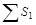 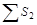 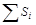
2. Количество рабочих, необходимых для уборки:
где 250 - производительность одного уборщика, м2/ч; tу - время, отведенное на пылеуборку, ч.
3. Количеству рабочих, определенных по формуле (2), соответствует количество работающих пылесосных насадок
4. Общая производительность воздуходувных машин, м3/ч:
где Lc - расход воздуха через один пылесосный насадок принимается 180 м3/ч.
5. Общее количество пыли, подлежащее уборке системой пылеудаления
где Si - площади поверхностей с одинаковой загрязненностью, м2; qi - загрязненность поверхности, кг/м2/сут, принимается:
для твердых полов - 0,001;
для полов, покрытых ковром - 0,005.
6. Диаметры труб вакуумной системы пылеуборки определяются расчетным способом в зависимости от расхода воздуха и принятой скорости.
7. При расчете разветвленных трубопроводов необходимо обеспечить равенство давлений в местах присоединения ответвлений (в узлах) подбором соответствующих диаметров ответвлений.
8. Скорости движения пылевоздушной смеси в трубах вакуумной системы пылеуборки принимаются:
для горизонтальных участков и вертикальных участков с движением пыли снизу вверх - 20 ... 25 м/с;
для вертикальных участков с движением пыли сверху вниз - 15 ... 20 м/с.
9. В многоэтажных зданиях при наличии нескольких стояков их следует проектировать одного неизменного диаметра. При этом пылеуборка производится поэтажно.
10. При наличии 2 стояков со сборным горизонтальным участком диаметр последнего можно принять равным диаметру стояков, допускается в нем увеличение скорости.
11. Расчетная потеря давления в системе определяется для наиболее удаленного от воздушной машины участка. При этом коэффициенты местного сопротивления для основных узлов систем вакуумной пылеуборки принимаются по табл. 2.
12. Потерю давления в барбатерах следует принимать 1200 Па.
13. При потерях давления во всасывающем трубопроводе до 10 кПа изменением плотности воздуха в расчетах можно пренебречь. При большем вакууме для более точных расчетов следует учитывать термодинамическое изменение состояния воздуха.
14. Общий коэффициент пылеулавливания двухступенчатого пылеулавливателя рассчитывается по формуле
ηобщ = (η1 + η2 - η1 · η2), (6)
где η1 и η2 - коэффициенты пылеулавливания первой и второй ступени пылеулавливателя.
15. Пылесборник пылеулавливателя рассчитывается не менее чем на суточный объем уловленной пыли.
2.31. (2.26). Воздуходувные машины и пылеулавливатели необходимо, как правило, располагать в специальных помещениях - пылесосных камерах, которые можно размещать в технических подпольях зданий.
2.32. (2.26). Подсоединение пылепроводов и вытяжною воздуховода к воздуходувной машине осуществляется через эластичные воздухонепроницаемые вставки диаметром, равным подсоединяемому трубопроводу, длиной не менее 200 мм. Воздуходувная машина устанавливается на пружинных или резиновых амортизаторах.
2.33. (2.26). Для контроля за работой пылесосной установки предусматривается вакуумметр на всасывающей стороне воздуходувной машины.
2.34. (2.26). Управление пылесосной установкой предусматривается местное. Работу пылесосной установки надо включать в общую систему автоматизации и диспетчеризации управления и контроля за работой инженерного оборудования здания при их наличии.
2.35. (2.26). При проектировании системы вакуумной пылеуборки в части огнестойкости стенок пневмопроводов, правил прокладки пневмопроводов по зданию, устройству огнезадерживающих клапанов, требовании к пылеуловителям, пылесборникам и камерам воздуходувных машин необходимо руководствоваться требованиями к прокладке воздуховодов, содержащихся в СНиП 2.04.05-86 «Отопление, вентиляция и кондиционирование».
2.36. (2.26). С целью предотвращения взрывов пыли от зарядов статического электричества стенки пневмопроводов необходимо заземлять в соответствии с требованиями «Правил защиты от статического электричества в производствах химической промышленности»
2.37. (2.28 - 2.30). В общественных зданиях должна быть предусмотрена система удаления мусора.
Рис. 13. Примерные схемы мусоропроводов
1 - контейнер, 2 - направляющий патрубок с шифером; 3 - опора отвода мусоропровода, 4 - отметка промежуточной площадки лестницы, 5 - фланец дефлектора, 6 - дефлектор, 7 - загрузочный клапан, 8 - направляющий патрубок с шибером, 9 - контейнер
Рис. 14. Установка загрузочного клапана в стене мусоросборной камеры
1 - лоток, 2 - клапан загрузочный, 3 - опора ствола мусоропровода; 4 - направляющий патрубок с шибером; 5 - контейнер
Система мусороудаления должна включать сбор, накопление, а также временное (в пределах санитарных норм) хранение мусора и обеспечение его дальнейшего вывоза.
При удалении пищевых отходов из зданий и помещений общественного питания должны учитываться специальные технические и гигиенические требования к их сбору, хранению и транспортированию.
Система удаления мусора из зданий должна быть увязана с системой санитарной очистки населенного пункта.
При проектировании крупных комплексов, общественных центров и зданий допускается устройство пневматической системы для сбора и удаления мусора, включая средства для его вывоза.
Мусоропроводы в зданиях должны соответствовать требованиям ВСН 8-72.
Примерные схемы мусоропроводов приведены на рис. 13, а пример установки загрузочного клапана на рис 14.
2.38. (2.28 - 2.30). Металлические элементы мусоропроводов должны соответствовать стандартам:
ГОСТ 24324-80 «Клапаны загрузочные для мусоропроводов жилых и общественных зданий. Технические условия»;
ГОСТ 26256-84 «Шиберы для мусоропроводов жилых и общественных зданий. Технические условия»;
ГОСТ 26257-84 «Контейнеры несменяемые для мусоропроводов жилых и общественных зданий. Технические условия».
2.39. (2.28 - 2.30). Ствол мусоропровода должен выполняться, как правило, из элементов цилиндрических асбестоцементных с условным проходом. Допускается стволы мусоропроводов выполнять круглой формы указанного размера из других соответствующих строительных материалов, а также совмещенными с конструктивными элементами здания (лифтовыми и вентиляционными шахтами, каналами дымоудаления и т.п.) (рис. 15, 16, 17).
2.40. (2.28 - 2.30). При смежном размещении стволов мусоропроводов, вентиляционных шахт и каналов дымоудаления перегородки, отделяющие ствол мусоропровода от вентиляционных шахт или каналов дымоудаления, должны быть пылегазонепроницаемыми и иметь предел огнестойкости, установленный СНиП 2.04.05-86.
2.41 (2.28 - 2.30). Мусоропроводы не должны сужать расчетную ширину путей эвакуации людей и не должны препятствовать открыванию дверей эвакуационных выходов, очистке окон; к загрузочным клапанам должен быть обеспечен удобный и освещенный подход.
2.42 (2.28 - 2.30). Наружная сторона двери мусоросборной камеры должна иметь архитектурно-декоративное покрытие.
Допускается установка раздельных дверей: функциональной (внутренней) и декоративной (наружной).
Для строительства в I климатическом районе и IIIА климатическом подрайоне необходимо устройство в мусоросборной камере тамбура с раздельными дверьми: внутренней - функциональной и наружной - декоративной.
Рис. 15. Схема ствола мусоропровода, совмещенного с лифтовой шахтой
1 - канал вентиляции технического подполья; 2 - блок объемной шахты; 3 - канал мусоропровода
2.43. (2.28 - 2.30). Светильники электрического освещения мусоросборной камеры устанавливаются в пыленепроницаемом влагозащищенном исполнении; вход в мусоросборную камеру также должен иметь электрическое освещение (в уличном исполнении).
2.44. (2.28 - 2.30). В зданиях, оборудованных автоматическими установками пожаротушения (спринклерные установки) или автоматической пожарной сигнализацией (тепловой), необходимо предусматривать установку пожарных датчиков или спринклеров в мусоросборных камерах.
Рис. 16, Схема ствола мусоропровода, совмещенного с вентиляционным блоком
1 - гипсобетонный блок инженерных коммуникаций КБ 5-2; 2 - мусоропровод
2.45. (2.28 - 2.30). Для накопления и временного хранения мусора в зданиях, не оборудованных мусоропроводом, проектируемых для строительства в городах, следует предусматривать мусоросборную камеру или другое хозяйственное помещение.
Pис. 17. Схема створа мусоропровода, совмещенного с вентиляционным блоком сечения
1 - гипсобетонный блок, 2 - плита перекрытия лестничной клетки, 3 - гернитовый шнур Ф 40 ПВТУ 32-65
Рис 18. Схема площадки под мусоросборники вместимостью 0,1 м3
Мусоросборная камера в зданиях, не оборудованных мусоропроводом, может быть встроенной, пристроенной или отдельно стоящей.
Требования к таким мусоросборным камерам предъявляются такие же, как к камерам зданий, оборудованных мусоропроводом.
2.46. (2.28 - 2.30). Для накопления и временного хранения мусора в зданиях, не оборудованных мусоропроводом, проектируемых для строительства в поселках и сельских населенных пунктах, допускается (вместо мусоросборной камеры) использовать крытую или открытую хозяйственную площадку или хозяйственное помещение.
2.47. (2.28 - 2.30). Отдельно стоящие хозяйственные помещения и площадки следует располагать на расстоянии не менее 14 - 20 м и не более 75 - 100 м от общественных зданий.
Отдельно стоящие хозяйственные помещения и площадки должны быть ограждены зелеными насаждениями, ассортимент которых определяется климатической зоной. Зеленые насаждения и ограждения не должны ограничивать работу мусоровоза.
Примерная схема площадки под мусоросборники вместимостью 0,1 м3 приведена на рис. 18.
Рекомендуемые схемы крытых площадок под контейнеры вместимостью до 0,75 м3 показаны на рис. 19, 20.
2.48. (2.28 - 2.30). Минимальные площади элементов хозяйственных помещений и площадок для размещения в них специального оборудования и подходов для обслуживания приведены в табл. 3.
2.49. (Раздел 2). При проектировании зданий для строительства в IA, IБ и IГ климатических подрайонах необходимо по возможности принимать компактные объемно-планировочные решения, избегать сложных по конфигурации планов и разновысотности отдельных частей здания.
2.50. В наружных стенах подвалов и технических подполий, не имеющих вытяжной вентиляции, необходимо предусматривать продухи общей площадью не менее 1:400 площади пола.
2.51. В зданиях высотой 9 этажей нужно предусмотреть возможность крепления строительных люлек с электроприводом или другое устройство для ремонта и чистки фасадов.
2.52. (Приложение 2). Помещения в подвальных и цокольных этажах общественных зданий могут быть использованы по второму назначению для нужд гражданской обороны под помещения основного назначения убежищ и противорадиационных укрытий в соответствии с нормативными документами.
Таблица 3
|
Необходимая площадь на единицу инвентаря, м2 |
||
|
для размещения |
для обслуживания |
|
|
Мойка |
0,24 |
1 |
|
Трап для отвода сточной воды в канализационную сеть |
0,1 |
- |
|
Тележка для транспортирования тары и других работ дворника |
0,9 |
1,2 |
|
Место для хранения инвентаря дворника |
0,55 |
1 |
|
Место хранения вторсырья |
3 |
0,5 |
|
Мусоросборники вместимостью 0,1 м3 |
0,19 |
- |
|
Конвейеры вместимостью 0,3 м3 |
0,66 |
- |
|
Контейнеры вместимостью 0,75 м3 |
1 |
1,5 |
Примечание. К сумме площадей вводится коэффициент Кс = 0,9, учитывающий возможность их совмещения при работе.
Рис. 19. Площадка крытая для двух контейнеров
Рис. 20. Площадка крытая для пяти контейнеров
2.53. Помещения, предназначенные для использования по второму назначению, рекомендуется предусматривать внутри застройки под зданиями наименьшей этажности.
2.54. При использовании помещений для нужд гражданской обороны желательно отдавать предпочтение большим помещениям, как, например, вестибюль с гардеробной, фойе, холлы, торговые залы магазинов, группа помещений предприятий общественного питания, лаборатории и аудитории для изучения спецпредметов с нестационарным, убираемым спецоборудованием, помещения для посетителей, демонстрационные залы, залы семейных торжеств, приемные пункты бытового обслуживания, стрелковые тиры, спортивные залы для тренировочных занятий, кинотеатры или их залы вместимостью до 300 мест, выставочные залы и пр.
2.55. Суммарная площадь помещений, предназначенных для укрываемых в убежище, должна быть не менее 75 м2, при этом желательно, чтобы площадь отдельных помещений была не менее 25 м2.
Суммарная площадь помещений, предназначенных для укрываемых в противорадиационных укрытиях, должна быть не менее 25 м2.
2.56. Помещения, используемые в качестве убежища, должны быть, как правило, высотой не более 3,5 м и не менее 1,8 м.
2.57. В кладовых и подсобных помещениях стеллажи, поддоны и другие виды оборудования желательно проектировать с учетом возможности их приспособления для размещения укрываемых.
2.58. Помещения, предназначенные для использования под противорадиационные укрытия, рекомендуется проектировать исходя из минимальных затрат времени и средств на их переоборудование и срочное повышение защиты от ионизирующих излучений (предусматривать оконные решетки в приямках, допускающие усиление выступающих над поверхностью земли стен цокольного этажа, наружные подоконные доски для заделки оконных проемов, экраны у входов и пр.).
Массу строительных элементов для усиления стен и закрытия оконных проемов с целью срочного повышения защиты помещений от ионизирующих излучений рекомендуется принимать до 80 - 100 кг.
2.59. В помещениях, предназначенных для использования по второму назначению в качестве убежища, в отделке интерьеров нежелательно применять штукатурку, облицовочные плитки и другие откалывающиеся отделочные материалы.
Рекомендуются: побелка и окраска клеевыми и масляными красками с получением матовых поверхностей, офактуривание лицевой поверхности сборных элементов в заводских условиях, затирка швов и лицевой поверхности, щитовые отделочные материалы с соответствующими противопожарными характеристиками.
3.1. (3.1.) При проектировании общественных зданий со стилобатом площадь этажа можно принимать без учета площади стилобата при условии отделения высотной части здания противопожарной стеной. Допускается сообщение высотной части здания со стилобатной через противопожарный тамбур-шлюз с подпором воздуха не менее 20 Па.
3.2. (3.8). В прил. 3 приведен пример расчета плотности людского потока в коридоре.
3.3. (3.11). Поэтажные холлы открытых на всю высоту здания лестниц рекомендуется отделять противопожарными перегородками от коридоров и других помещений на каждом этаже здания.
3.4. (3.17). Пример планировочного решения по устройству выходов из лестничных клеток через один вестибюль приведен на рис. 21.
3.5. (3.19). Ширину лестничных маршей и дверей эвакуационных выходов рекомендуется принимать не более 2,4 м, чтобы избежать нарушения устойчивости потока эвакуирующихся людей.
При необходимости проектирования лестничных маршей большей ширины желательно предусматривать их разделение по ширине промежуточными перилами с поручнем.
Для лестниц с шириной марша более 1,5 м желательно предусматривать поручни с двух сторон.
3.6. (3.20). Пример устройства наружной пожарной лестницы приведен на рис. 22. Необходимость устройства наружных пожарных лестниц установлена СНиП 2.01.02-85.
3.7. (3.27). К подвалам специального назначения относятся подвалы, предназначенные для использования в качестве защитного сооружения гражданской обороны.
Под отсеком в подвальном или цокольном этаже принимается суммарная площадь помещений, ограниченная противопожарными преградами (перегородками, перекрытиями).
Рис. 21. Пример планировочного решения по устройству выходов из лестничных клеток через один вестибюль
1 - вестибюль; 2 - лестничная клетка с выходом наружу через вестибюль; 3 - лестничная клетка с выходом непосредственно наружу и через вестибюль; 4 - противопожарная перегородка с дверью
Рис. 22. Пример устройства наружной пожарной лестницы
1 - покрытие здания; 2 - сходный трап; 3 - тетива лестницы; 4 - стойка крепления
Рис. 23. Зависимость продолжительности начальной стадии пожара от площади пола и максимальной по времени среднеобъемной температуры от массы горящего вещества на 1 м2
В пределах каждого отсека могут устанавливаться сетчатые или не доходящие до потолка перегородки.
При отсутствии в отсеках окон или люков следует предусматривать шахты дымоудаления с ручным или автоматическим открыванием в случаях, установленных СНиП 2.08.02-85. Система дымоудаления из таких помещений должна обеспечивать незадымление смежных помещений при открытых дверях из помещений без естественного освещения.
Расход дыма G, кг · с-1, удаляемого из помещения без естественного освещения, определяется по формуле
где В и Н - ширина и высота дверного проема, м; ρпом и ρс - плотности воздуха в помещении, где возник пожар, и в смежном с ним, кг · м-3; g - ускорение свободного падения, м · с-2.
Плотность воздуха в смежном помещении и в помещении, где возник пожар, определяется по формуле
Температура воздуха в смежном помещении известна из проектных данных, а максимальную по времени среднеобъемную температуру в помещении, где возник пожар, определяют по номограмме рис. 23. Пример расчета приведен в прил. 4.
3.8. (3.30). В зданиях, состоящих из разных частей, из которых одна имеет этажность 10 и более этажей, соединяется коридорами (проходами) с частями здания меньшей этажности, в местах прохода в высотную часть здания следует предусматривать тамбур-шлюз. В этом случае на части здания меньшей этажности не распространяются требования пп. 3.30 - 3.40 СНиП.
3.9. Лестничные клетки с поэтажными входами через наружную воздушную зону по балконам и лоджиям (рис. 24) не следует рассматривать в качестве постоянной рабочей связи между этажами, а потому отпадает необходимость в их отоплении. Вследствие этого целесообразно проектировать объем указанных клеток вне пределов общего объема здания, чтобы исключить необходимость в утеплении элементов каркаса, выходящих на лестницу.
Во избежание возможного задувания ветром дыма через наружную зону в лестничные клетки не допускается расположение последних во внутренних углах наружных стен здания. Для защиты наружной зоны (лоджии, балконы) от снега рекомендуется устройство решетки из вертикальных планок по открытому периметру названной зоны.
3.10. Вертикальные пути эвакуации здания следует рассредоточивать. Рекомендуется располагать лестничную клетку со входами через наружную воздушную зону на допустимом по расчету эвакуации удалении от лифтового узла, а лестничную клетку, незадымляемость которой обеспечивается посредством создания избыточного давления (рис. 25), - рядом с лифтовым узлом. В целях увеличения выхода нормируемой площади помещений такую лестничную клетку целесообразно располагать в центральной части здания.
Подпор воздуха в отсеках лестничных клеток обеспечивается путем подачи воздуха от вентиляторов в верхние зоны отсеков.
Рис. 24. Пример планировочного решения лестничной клетки с пере» ходом через наружную воздушную зону по балконам
Рис. 25. Устройство рассечки между этажами в лестничной клетке с подпором воздуха
Рис. 26. Схема размещения отверстий дымоудаления в коридорах большой протяженности
1 - перекрытие, 2 - отверстие дымоудаления с клапаном, узлом управления, 3 - перегородка из несгораемых материалов с самозакрывающейся дверью для деления коридора на отсека длиной не более 60 м
3.11. (Примеч. к п. 3.30). По аналогии с текстом примеч. 1 к п. 3.30 здания высотой семнадцать надземных этажей при использовании семнадцатого этажа в качестве технического можно проектировать в соответствии с требованиями для 10 - 16-этажных зданий.
3.12. (3.33). Воздух в лифтовые шахты следует подавать сосредоточенно сверху. Все лифты при пожаре должны опускаться вниз по сигналу от пожарных извещателей. Если дверь лифта на первом этаже здания открывается автоматически, то скорость воздуха в щелях между стенами лифтовой шахты и кабиной должна быть не менее 2 м/с-1.
3.13. (3.34). В том случае, если через лифтовый холл необходимо осуществлять проход между частями здания (двумя или более), рекомендуется устройство дополнительного прохода (или проходов), обеспечивающего сообщение между коридорами, имеющимися в частях здания. В лифтовый холл не должны открываться двери из рабочих и других помещений.
Рис. 27. Схемы подачи наружного воздуха в защищаемый объем для создания подпора при пожаре
а - сосредоточенная подача воздуха в верхнюю часть объема лестничной клетки и лифтовой шахты; б - подача воздуха в верхнюю часть отсеков лестничной клетки при ее разделении рассечкой, в - подача воздуха в верхние части отсеков лестничной клетки с помощью осевых вентиляторов; 1 - лестничная клетка, 2 - вентилятор подачи воздуха в защищаемый объем; 3 - лифтовая шахта; 4 - шахта (канал) для подачи воздуха; 5 - рассечка в лестничной клетке
3.14. (3.42 - 3.46). В системе дымоудаления рекомендуется применять радиальные (центробежные) вентиляторы.
Схема размещения отверстий дымоудаления в коридорах большой протяженности показана на рис. 26. Пример расчета параметров системы дымоудаления из коридора 16-этажного административного здания приведен в прил. 5.
Шахта дымоудаления должна соединять поэтажные отверстия дымоудаления отсеков коридоров, расположенных непосредственно друг над другом. Сопротивление воздухопроницанию шахт дымоудаления рекомендуется принимать не менее 3,6 · 105 Па · м2 · с · кг-1.
Рис. 28. Взаимное расположение отверстий воздухозабора и выброса дыма системы противодымной защиты зданий
а - вентиляторы установлены в общей вентиляционной камере на покрытии здания, б - вентиляторы установлены в обособленных вентиляционных камерах на техническом этаже (чердаке здания); 1 - отверстие воздухозабора вентилятора подачи воздуха; 2 - вентилятор подачи воздуха; 3 - ограждающая конструкция вентиляционной камеры; 4 - покрытие здания; 5 - сплошная перегородка, разделяющая вентиляционные камеры; 6 - покрытие вентиляционной камеры; 7 - выбросной патрубок системы дымоудаления; 8 - междуэтажное перекрытие
Удаление дыма должно осуществляться только из того отсека поэтажного коридора, к которому примыкает помещение, где возник пожар. Для обеспечения эффективного дымоудаления клапаны следует располагать так, чтобы нижний срез отверстия был выше верхнего среза дверного проема.
При устройстве в коридорах сплошных подвесных потолков отверстия дымоудаления следует располагать ниже уровня подвесного потолка.
Отверстия воздухозабора систем подпора воздуха следует располагать так, чтобы исключить попадание в них дыма (рис. 27 и 28).
3.15. Устройство порогов на путях эвакуации людей не допускается.
3.18. Материалы, используемые для отделки стен, потолков и пола машинных помещений лифтов, должны быть несгораемыми.
3.17. Теплоизоляцию холодильных камер следует предусматривать из трудносгораемых или несгораемых материалов.
1. Строительный объем здания определяется как сумма строительного объема выше отметки ± 0,00 (надземная часть) и ниже этой отметки (подземная часть).
Строительный объем надземной и подземной частей здания определяется в пределах внешних ограничивающих поверхностей с включением ограждающих конструкций, лоджий, световых фонарей, купонов и др., начиная с отметки чистого пола каждой из частей здания, без учета выступающих архитектурных деталей и конструктивных элементов, подпольных каналов, портиков, открытых веранд, балконов, объема проездов и пространства под зданием на опорах (в чистоте), а также подполья для проветривания под зданиями, проектируемыми для строительства на вечномерзлых грунтах.
Площадь вертикального поперечного сечения следует определять по обводу наружной поверхности стен, по верхнему очертанию кровли и по уровню чистого пола первого этажа.
При измерении площади поперечного сечения выступающие на поверхности стен архитектурные детали, а также имеющиеся в стенах ниши учитывать не следует.
2. Площадь застройки здания определяется как площадь горизонтального сечения по внешнему обводу здания на уровне цоколя, включая выступающие части. Площадь под зданием, расположенным на столбах, а также проезды под зданием включаются в площадь застройки.
3. Высоту технического этажа (технического подполья), предназначенного для размещения только инженерных сетей, допускается принимать не менее 1,6 м от пола до потолка.
4. Площадь подполья для проветривания, проектируемого для строительства на вечномерзлых грунтах, чердака1, технического подполья (технического чердака) при высоте от пола до низа выступающих конструкций не менее 1,8 м, а также лоджий2, наружных балконов, портиков, крылец, наружных открытых лестниц в общую, полезную и нормируемую площади не включаются.
1 Пространство между неутепленными конструкциями кровли (наружных стен) и утепленным перекрытием верхнего этажа.
2 Ниша в объеме здания (в том числе на первом этаже) или перекрытое и огражденное в плане с трех сторон капитальными конструкциями пространство.
5. Площади радиоузлов, коммутационных, подсобных помещений при эстрадах и сценах, киноаппаратных, ниш шириной не менее 1 и высотой 1,8 м и более, а также встроенных шкафов (за исключением встроенных шкафов инженерного назначения) включаются в нормируемую площадь здания.
Термины и определения
Лифтовый узел - объемно-планировочный элемент здания, включающий в себя лифтовые холлы, шахты и машинные помещения одного лифта, группы лифтов или нескольких групп лифтов, расположенных в непосредственной близости друг от друга.
Группа лифтов - два и более лифта одинакового назначения, объединенных системой группового управления, обслуживающих, как правило, одни и те же этажи здания и имеющих общие холлы или этажные площадки.
Групповое управление лифтами - система управления совместной работой двух и более лифтов в соответствии с заданным алгоритмом (исключение «холостых» пробегов и остановок лифтов, минимизация времени ожидания лифтов).
Лифтовый холл - помещение, в которое выходят двери лифтов.
Однорядное расположение лифтов - расположение лифтов с одной стороны лифтового холла.
Двухрядное расположение лифтов - расположение лифтов с двух противоположных сторон лифтового холла.
Ширина лифтового холла - расстояние от передней стены лифтовых шахт до противоположной стены при однорядном расположении лифтов или расстояние между передними стенами шахт при двухрядном, м.
Население здания - расчетная численность людей, на которое рассчитано здание.
Междуэтажный людской поток - численность людей, перемещающихся между этажами за определенный период времени, чел/ч.
Пассажирский поток (пассажиропоток) - численность людей, перемещающихся между этажами при помощи средств вертикального транспорта за определенный период времени.
Интервал движения лифтов - усредненный интервал времени между моментами последовательного отправления вверх с основного посадочного этажа лифтов одной группы, с.
Круговой рейс лифта - путь, проходимый кабиной от основного посадочного этажа до возвращения на этот этаж, м.
Основной посадочный этаж - этаж, на который прибывает и с которого отправляется основная часть перевозимых лифтами пассажиров (обычно этаж входа в здание).
Заполнение кабины, отправляющейся с основного посадочного этажа (возвращающейся на основной посадочный этаж), - численность пассажиров, вошедших в кабину (вышедших из кабины) при отправлении с основного посадочного этажа (по прибытии на основной посадочный этаж), чел.
Время кругового рейса лифта - время, затрачиваемое на круговой рейс и включающее время пуска и движения лифта, открывания и закрывания дверей, а также время загрузки и разгрузки кабины лифта, с.
Число возможных остановок - наибольшее число остановок, на которых лифт может остановиться в определенный период функционирования здания.
Число вероятных остановок - усредненное число остановок лифта за круговой рейс, определяющееся методами теории вероятности с учетом числа возможных остановок, заполнения кабины и организации работы лифтов.
Зонная организация работы лифтов - обслуживание одной группой (одними группами) лифтов населения нижней части здания, другой группой (другими группами) - населения вышележащей части здания, проходят нижнюю часть здания без остановок (см. рис. 7).
Пересадочный этаж (этажи) - этаж (этажи) на стенке верхней и нижней зоны, на котором (которых) есть остановки у лифтов, обслуживающих зоны при зонной организации работы (см. рис. 7).
1. Настоящая методика устанавливает общие положения проведения расчета. Блок-схема расчета вертикального транспорта приведена на рисунке.
2. При проектировании вертикального транспорта зданий и сооружений, для которых отсутствуют конкретные методики расчета, необходимо:
провести анализ технологии функционирования проектируемого объекта и выявить пути возможных перемещений между этажами населения, возникающих в процессе работы; исходя из этих перемещений предварительно оценить характер возникающих пассажиропотоков;
выбрать существующий объект аналогичный по технологии функционирования с проектируемым и провести хронометражные замеры междуэтажного движения населения в различные периоды функционирования этого объекта;
обработать результаты хронометражных замеров и выявить параметры пассажиропотоков в различные периоды функционирования объекта; выбрать период (периоды) с максимальными (пиковыми) пассажиропотоками;
на основании результатов обработки хронометражных замеров определить расчетные пассажиропотоки в проектируемом объекте и выполнить расчет вертикального транспорта.
3. При выполнении расчетов вертикального транспорта и проведении хронометражных замеров консультации и методическая помощь может быть получена в головной научно исследовательской организации по лифтам.
4. Выбранные по результатам расчетов лифты должны быть скомпонованы в группы. При установке в здании нескольких лифтовых групп для выбора лифтов каждой группы следует проводить самостоятельный расчет, при этом должно быть определено, какая часть населения здания пользуется той или иной группой лифтов.
В соответствии с распорядком работы учреждений или организаций в зданиях могут быть выделены периоды с различными характером и величинами пассажирских потоков, транспортируемых лифтами.
Для каждого периода следует производить самостоятельный расчет вертикального транспорта. Число, грузоподъемность и скорость лифтов, выбранных по результатам расчетов, должны обеспечивать обслуживание пассажирских потоков во всех расчетных периодах.
В большинстве случаев в общественных зданиях основным посадочным этажом является 1 этаж. Из всех помещений, которые по СНиП 2.08.02-85 разрешается размещать в подвальных и цокольных этажах, только посещение гардеробных и предприятий общественного питания образует стабильные пассажиропотоки. При указанном решении за основной посадочный этаж при расчетах вертикального транспорта нужно принимать подвальный и цокольный этажи (в периоды, когда пассажиропотоки следуют с этих этажей). Как правило, основным посадочным этажом является первый этаж.
Блок-схема расчета вертикального транспорта
Для простоты в качестве основного принят первый этаж. При проектировании зданий с подвальными и цокольными этажами с помещениями, для посещения которых необходимо пользоваться лифтами, в расчет следует внести соответствующие коррективы.
5. Пассажиропотоки в зданиях могут носить характер:
а) односторонний: вверх с основного посадочного этажа, например, в период прихода в здание сотрудников управлений, проектных и конструкторских организаций, учащихся учебных заведений и т.д.;
б) односторонний: вниз с этажей на основной посадочный, например, в период ухода из здания населения;
в) двухсторонний: вверх с основного посадочного этажа и вниз с этажей на основной посадочный без междуэтажных перемещений выше основного посадочного этажа, например, в спальных корпусах санаториев и учреждений отдыха и т.д.;
г) двухсторонний: вверх с основного посадочного этажа, вниз с этажей на основной посадочный и между этажами выше основного посадочного.
6. Грузоподъемность (номинальная вместимость - Е) лифтов определяется численностью пассажиров, накопившихся в лифтовых холлах за время интервала движения лифтов tи Заполнение кабины одною лифта, отправляющегося с основного посадочного этажа Еп и опускающегося на этот этаж Ес:
Eп = a1п · tи / 3600, чел.; (1)
Eс = a1с · tи / 3600, чел.; (2)
где a1п; a1с - величины расчетных приведенных часовых пассажиропотоков, поднимающихся вверх с основного посадочного этажа и спускающихся на основной посадочный этаж, чел.-ч (см. п. 10); Е - номинальная вместимость кабины лифтов, выбираемых для установки, чел.; tи - интервал движения лифтов (усредненный отрезок времени между последовательными моментами отправления вверх с основного посадочного этажа кабин пассажирских лифтов одной группы), с.
Для некоторых видов зданий величина Еп должна быть меньше Е. Например, для гостиниц и турбаз высшего, I и II разрядов
В каждом конкретном случае это соотношение выбирается по действующим строительным нормам и исходя из требуемого уровня комфортности обслуживания. Чем меньшую долю составляет Еп от Е, тем выше уровень комфортности обслуживания пассажиров.
7. Интервал движения лифтов в общественных зданиях не должен превышать 60 с. Величина интервала движения лифтов характеризует уровень комфортности обслуживания пассажиров. Меньшие значения позволяют получить более высокий уровень комфортности обслуживания пассажиров.
Уровень комфортности обслуживания пассажиров можно оценить как: «отличный» - при tи до 30 с; «хороший» - при tи до 45 с; «удовлетворительный» - при tи до 60 с; «неудовлетворительный» - при tи > 60с.
Значения Е выбираются таким образом, чтобы полученная величина Еп была наибольшей при удовлетворении неравенств 3 и 4.
8. Число пассажирских лифтов п, требующихся для установки в здании
где Т - время кругового рейса лифта.
Полученное дробное значение п округляется до целого. Округление до целого может производиться в сторону уменьшения в случаях, когда дробная часть не превышает 10 % целой.
Если полученное по результатам расчета число лифтов слишком велико, то принимается иная организация обслуживания пассажиров и работы лифтов или изменяются планировочное решение здания и исходные данные для расчета.
9. Величины расчетных приведенных часовых пассажиропотоков а1п и а1с:
где
0,12 - коэффициент приведения к часовому пятиминутного пассажиропотока с
учетом, что показатели интенсивности пятиминутных пассажиропотоков Jп и Jс принимаются в %; Jп, Jс - показатель
интенсивности пятиминутных пиковых пассажиропотоков, поднимающихся с основного
посадочного этажа и опускающихся на этот этаж, %; 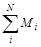
Расчет вертикального транспорта в зданиях производится исходя из обслуживания пятиминутных пиковых пассажиропотоков. Величина пятиминутного пассажиропотока определяется показателями интенсивности Jп и Jс, показывающими, какая часть населения здания, %, перемещается вверх с основного посадочного этажа и спускается с этажей на основной посадочный в течение 5 минут, в которые пассажиропоток максимальный.
Величина Jп и Jс определяется экспериментально путем проведения хронометражных замеров в функционирующих зданиях. Величины интенсивности пятиминутных пиковых пассажиропотоков приведены в соответствующих ВСН. В случае когда указанные методики не могут быть использованы, величины Jп и Jс должны быть определены экспериментально путем хронометражных замеров на действующих объектах, идентичных по технологии функционирования проектируемому объекту. Этажность, заселенность, высота этажей, размещение по этажам отделов, служб и т.п. в выбранном функционирующем объекте могут не совпадать с проектируемым объектом. Анализ результатов хронометражных замеров и технологии функционирования проектируемого и обследованного объектов позволит получить относительные показатели Jп, Jc и др. и коэффициенты, которые позволят провести расчет вертикального транспорта.
При проведении расчета по периодам, когда пассажиропотоки носят односторонний характер (см. п. 5а и б), при одностороннем потоке вверх а1с = 0; а вниз а1п = 0,
10. Время между двумя последовательными отправлениями вверх кабины одного и того же лифта с основного посадочного этажа, включающее в себя время на движение вверх до этажа поворота и вниз до основного посадочного этажа, а также время на остановки п стоянку на этажах, называется временем кругового рейса лифта Т
где
Нв - вероятная высота подъема лифта, м; h - путь,
проходимый лифтом при разгоне до номинальной скорости и торможения от
номинальной скорости до полной остановки, м (см. табл. 3); NB - число вероятных
остановок лифта за круговой рейс выше основного посадочного этажа; 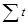
11. Вероятная высота подъема лифта Нв:
Нв = Кн · Нmах, м. (9)
При работе лифта с экспрессной зоной (см. рис. 2)
где Нmах - высота подъема лифта от уровня пола основного посадочного этажа до уровня пола верхнего обслуживаемого этажа, м; Нэ - высота экспрессной зоны от уровня пола основного посадочного этажа до уровня пола нижней остановки зоны, обслуживаемой лифтами, м; Нз - высота зоны, обслуживаемой лифтами, от уровня пола нижней остановки до уровня пола верхней остановки зоны, м; Кн - коэффициент вероятной высоты подъема лифта. Значения Кн следует принимать по табл. 1.
12. Число вероятных остановок лифта за круговой рейс выше основного посадочного этажа
Nв. п = [N1 - N1 · (N1 - 1 / N1)Еп] · Км. п; (12)
Nв.с = [N1 - N1 · (N1 - 1 / N1)Ес] · Км. с, (13)
где Nв. п, Nв. с - число вероятных остановок лифта выше основного посадочного этажа при подъеме и спуске соответственно; N1 - число возможных остановок лифта выше основного посадочного этажа при подъеме или спуске; Км. п, Км. с - коэффициент междуэтажных перевозок выше основного посадочного этажа при подъеме и спуске соответственно.
Таблица 1
|
Nв / N1 |
Кн |
|
0,6 |
0,8 |
|
0,61 ... 0,8 |
0,9 |
|
> 0,8 |
1 |
Таблица 3
|
h, м |
(t1 + t2 + t3), с |
|
|
1 |
2 |
12 |
|
1,6 |
2,5 |
10 |
|
2,5 |
4,5 |
11 |
|
4 |
16 |
16 |
Величины Nв. п и Nв. с при Км. п и Км. с = 1 могут быть найдены по табл. 2. При Км. п и Км. с ≠ 1 табличные значения Nв. п и Nв. с следует умножить на значения указанных коэффициентов.
13. Коэффициенты междуэтажных перевозок учитывают дополнительные остановки, которые должен сделать лифт для обслуживания пассажиров, перемещающихся на подъем и спуск между этажами выше основного посадочного этажа:
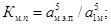 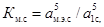
где
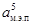 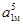 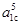
При выполнении расчетов вертикального транспорта для зданий, в которых пассажиропотоки выше основного посадочного этажа отсутствуют, коэффициенты Км. п и Км. с равны единице:
Км. п = 1; Км. с = 1.
14. Затраты времени
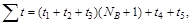
где t1 - затраты времени на разгон лифта до установившейся скорости и торможение от номинальной скорости до полной остановки, с; t2 - затраты времени на пуск лифта, с; t3 - затраты времени на открывание дверей, с; t4 - затраты времени на вход пассажиров в кабину лифта, с; t5 - затраты времени на выход пассажиров из кабины лифта, с.
15. Значения hи для лифтов с различными скоростями приведены в табл. 3.
Таблица 2
|
Заполнение кабины при подъеме Еп или спуске Ес |
||||||||||||||||||||
|
1 |
2 |
3 |
4 |
5 |
6 |
7 |
8 |
9 |
10 |
11 |
12 |
13 |
14 |
15 |
16 |
17 |
18 |
19 |
20 |
|
|
3 |
1 |
1,67 |
2,11 |
2,41 |
2,6 |
2,74 |
2,82 |
2,88 |
2,92 |
2,95 |
2,97 |
2,98 |
2,98 |
2,99 |
2,99 |
3 |
3 |
3 |
3 |
3 |
|
4 |
1 |
1,75 |
2,31 |
2,73 |
3,05 |
3,29 |
3,47 |
3,60 |
3,70 |
3,77 |
3,83 |
3,87 |
3,90 |
3,93 |
3,95 |
3,96 |
3,97 |
3,98 |
3,98 |
3,99 |
|
5 |
1 |
1,8 |
2,44 |
2,95 |
3,36 |
3,69 |
3,95 |
4,16 |
4,33 |
4,46 |
4,57 |
4,66 |
4,73 |
4,78 |
4,82 |
4,86 |
4,89 |
4,91 |
4,93 |
4,94 |
|
6 |
1 |
1,83 |
2,53 |
3,11 |
3,59 |
3,99 |
4,33 |
4,60 |
4,84 |
5,03 |
5,19 |
5,33 |
5,44 |
5,53 |
5,61 |
5,68 |
5,73 |
5,77 |
5,81 |
5,84 |
|
7 |
1 |
1,86 |
2,59 |
3,22 |
3,76 |
4,22 |
4,62 |
4,96 |
5,25 |
5,5 |
5,72 |
5,9 |
6,06 |
6,19 |
6,31 |
6,41 |
6,49 |
6,56 |
6,63 |
6,68 |
|
8 |
1 |
1,87 |
2,64 |
3,31 |
3,9 |
4,41 |
4,86 |
5,25 |
5,59 |
5,9 |
6,16 |
6,39 |
6,59 |
6,77 |
6,92 |
7,06 |
7,17 |
7,28 |
7,37 |
7,45 |
|
9 |
1 |
1,89 |
2,68 |
3,38 |
4,01 |
4,56 |
5,05 |
5,49 |
5,88 |
6,23 |
6,54 |
6,81 |
7,05 |
7,27 |
7,46 |
7,63 |
7,78 |
7,92 |
8,04 |
8,15 |
|
10 |
1 |
1,90 |
2,71 |
3,44 |
4,10 |
4,69 |
5,22 |
5,70 |
6,13 |
6,51 |
6,86 |
7,18 |
7,46 |
7,71 |
7,94 |
8,15 |
8,33 |
8,50 |
8,65 |
8,78 |
|
11 |
1 |
1,91 |
2,74 |
3,49 |
4,17 |
4,79 |
5,36 |
5,87 |
6,33 |
6,76 |
7,14 |
7,50 |
7,8! |
8,10 |
8,37 |
8,61 |
8,82 |
9,02 |
9,20 |
9,36 |
|
12 |
1 |
1,92 |
2,76 |
3,53 |
4,23 |
4,88 |
5,47 |
6,02 |
6,52 |
6,97 |
7,39 |
7,78 |
8,13 |
8,45 |
8,75 |
9,02 |
9,27 |
9,49 |
9,70 |
9,89 |
|
13 |
1 |
1,92 |
2,78 |
3,56 |
4,29 |
4,96 |
5,58 |
6,15 |
6,67 |
7,16 |
7,61 |
8,02 |
8,41 |
8,76 |
9,09 |
9,39 |
9,67 |
9,92 |
10,16 |
10,38 |
|
14 |
1 |
1,93 |
2,79 |
3,59 |
4,33 |
5,03 |
5,67 |
6,26 |
6,81 |
7,33 |
7,80 |
8,25 |
8,66 |
9,04 |
9,39 |
9,72 |
10,03 |
10,31 |
10,58 |
10,82 |
|
15 |
1 |
1,93 |
2,80 |
3,62 |
4,38 |
5,08 |
5,75 |
6,36 |
6,94 |
7,48 |
7,98 |
8,45 |
8,88 |
9,29 |
9,67 |
10,03 |
10,36 |
10,67 |
10,96 |
11,23 |
|
16 |
1 |
1,94 |
2,82 |
3,64 |
4,41 |
5,14 |
5,82 |
6,45 |
7,05 |
7,61 |
8,13 |
8,62 |
9,09 |
9,52 |
9,92 |
10,3 |
10,66 |
10,99 |
11,31 |
11,6 |
|
17 |
1 |
1,94 |
2,83 |
3,66 |
4,45 |
5,18 |
5,88 |
6,53 |
7,15 |
7,73 |
8,27 |
8,79 |
9,27 |
9,72 |
10,15 |
10,56 |
10,93 |
11,29 |
11,63 |
11,94 |
|
18 |
1 |
1,94 |
2,84 |
3,68 |
4,47 |
5,23 |
5,94 |
6,61 |
7,24 |
7,84 |
8,40 |
8,93 |
9,44 |
9,91 |
10,36 |
10,79 |
11,19 |
11,57 |
11,92 |
12,26 |
|
19 |
1 |
1,95 |
2,84 |
3,70 |
4,50 |
5,26 |
5,99 |
6,67 |
7,32 |
7,94 |
8,52 |
9,07 |
9,59 |
10,09 |
10,56 |
11,00 |
11,42 |
11,82 |
12,20 |
12,56 |
|
20 |
1 |
1,95 |
2,85 |
3,71 |
4,52 |
5,30 |
6,03 |
6,73 |
7,40 |
8,03 |
8,62 |
9,19 |
9,73 |
10,25 |
10,73 |
11,20 |
11,64 |
12,06 |
12,45 |
12,83 |
Примечание. Число вероятных остановок при дробных значениях Еп или Ес определяется интерполяцией.
16. Время входа пассажиров в кабину лифта и выхода из нее за круговой рейс
t4 + t3 = 2 · Δt · (Eп · Kм. п + Ec · Kм. с), (15)
где Δt - время входа или выхода одного пассажира, с. Величина Δt принимается:
Δt = 1,5 с - при ширине дверного проема меньше 1000 мм;
Δt = 1 с - при ширине дверного проема 1000 и более мм;
Δt = 1,2 с - при ширине дверного проема меньше 1000 мм;
Δt = 0,8 с - при ширине дверного проема 1000 и более мм.
На рис. представлена схема плана типового этажа корпуса технического вуза. Здание второй степени огнестойкости имеет 7 этажей. На этаже размещаются помещения кафедр и помещения для занятий по половине группы, размером в осях 6×6 м, которые могут объединяться в общую аудиторию для занятий целой группы (размером в осях 6×9 м и 6×12 м).
Абсолютно симметричное размещение лестничных клеток (А, Б, В, Г) позволяет подразделить план на четыре равные зоны. На рис. приведена схема планировки одной из таких зон, обслуживаемых лестничной клеткой Б, с указанием количества людей, эвакуирующихся из каждой аудитории, и маршрутов их движения в лестничную клетку. Расчетная схема путей эвакуации и движения людских потоков дана на рис.
В каждом помещении аудиторий находится менее 50 чел. и расстояние от любой точки в ней до выхода не превышает 25 м, поэтому согласно п. 3.5 и СНиП 2.08.02-85 из аудиторий может быть один выход в коридор с минимальной шириной двери выхода из помещения, равной 0,9 м.
Ширина коридора в свету δк составляет 2,6 м. Поток в коридоре формируется на участках от выходов из помещений, наиболее удаленных от лестничной клетки Б, до дверного проема, отдаляющего его от поэтажного холла, т.е. на участках (слева и справа по отношению к лестничной клетке) длиной l1 = 6 + 6 + 1,5 = 13,5 м. Плотность людского потока на участке его формирования в коридоре определяется как количество людей N, выходящих на него, к его площади. При этом следует учитывать неодновременность использования всех помещений, принимая расчетную численность студентов с коэффициентом К = 0,8 от проектной вместимости помещений. Следовательно, расчетная плотность людского потока на участке формирования в коридоре определится по формуле
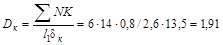
По табл. 6 СНиП 2.08.02-85 этому значению плотности соответствует допустимое расстояние от наиболее удаленного выхода из помещения до выхода в лестничную клетку:
60 м - из помещений, расположенных между лестничными клетками;
30 м - из помещений с выходами в тупиковый коридор.
Схема плана типового этажа технического вуза
Фактические расстояния в рассматриваемом проекте составляют 13,5 + 6 + 2 = 21,5 м, что меньше нормативных.
Двигаясь по пути эвакуации, людские потоки проходят
через три дверных проема. Следует определить их требуемую ширину 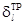
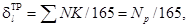
где - суммарное количество людей (с учетом неодновременности использования аудиторного фонда вуза), чел.; 165 - нормативное для зданий I и II степени огнестойкости количество людей, пропускаемых 1 м ширины двери без образования скоплений людей перед ней, чел.
Через дверной проем, отделяющий коридор от поэтажных холлов, эвакуируется Np = 67,2 чел., следовательно
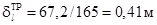
и поэтому может быть принята равной минимально допустимой ширине 1,2 м.
Перед следующим дверным проемом на путях эвакуации расположен дверной проем в лифтовый холл. Перед ним сливаются людские потоки, идущие с правой и левой частей коридора. Суммарное расчетное количество людей составляет Np = 2 · 67,2 = 134,4 чел. Требуемая расчетная ширина дверей этого выхода составит
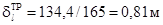
и должна быть принята минимально допустимой, равной 1,2 м.
Поскольку количество людей, эвакуирующихся через последующий выход (выход из лифтового холла в лестничную клетку) равно количеству людей, эвакуирующихся через предыдущий выход, то ширина этого выхода должна быть такой же, т.е. δ3, = δ2 = 1,2 м.
Ширина лестничного марша согласно требованиям п. 3.19 должна быть не менее ширины выхода в лестничную клетку с этажа, т.е, δ4 = 1,2 м и соответствует минимальной (п. 3.19) для рассматриваемого вида зданий.
Определяется расход дыма, который необходимо удалить из помещения без естественного освещения, для хранения горючего вещества массой 3000 кг в пересчете на древесину. Площадь помещения составляет 100 м2, в помещении имеется дверь шириной 0,85 м и высотой 2 м. Расчетная температура в смежных помещениях составляет 18 °С.
Определяем удельную пожарную нагрузку
q = 3000 / 100= 30 к · м-2.
По графику рис. 23 определяем продолжительность начальной стадии пожара (0,15 ч) и максимальную среднеобъемную температуру в помещении
tпом = 1000 °С.
Плотность воздуха в смежном помещении
ρс = 353 / 273 + tс = 353 / 273 + 18=1,21 кг · м-3.
Плотность газов в помещении, где возник пожар
ρпом = 353 / 273 + 1000 = 0,28 кг · м-3.
Расход дыма, который необходимо удалить из помещения, где возник пожар, определяем по формуле (1)
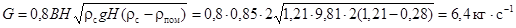
Объемный расход удаляемого дыма
Q = G / ρпом= 6,4 / 0,28 = 22,8 м3 · с-1 = 82300 м3 · ч-1.
Расчет требуемого давления вентилятора Р производится для конкретного исполнения канала дымоудаления и обвязки вентилятора. Выбор вентилятора осуществляется по каталогам в соответствии с полученными расчетом Р и Q.
Требуется рассчитать расход газов в системе дымоудаления 16-этажного административного здания. Высота этажа здания hэт = 3,6 м. Средняя пожарная нагрузка в помещениях составляет 20 кг · м-2. Дверные проемы в помещениях имеют размеры Н0В0 = 2 · 1 м. Помещения оборудованы приточной общеобменной вентиляцией, обеспечивающей трехкратный обмен воздуха. Поэтажный коридор длиной 60 м разделен посередине на отсеки перегородкой с дверью. Размеры дверных проемов в перегородках, отделяющих лестничную клетку с подпором воздуха от первого отсека коридора и отсеки коридора друг от друга, составляют НпВп = 2 · 1 м.
Средняя температура наружного воздуха наиболее холодной пятидневки года Тп составляет минус 30 °С, скорость ветра ив 5 м · с-1. В здании поддерживается температура Тв, равная 20 °С.
По номограмме рис. 23 определяем максимальную по времени среднеобъемную температуру в помещении, где возник пожар:
То. м = 912 · °С = 1185 К.
Определяем температуру продуктов горения, выходящих из помещения очага пожара в коридор
То. к = 0,65 · То..м = 0,65 · 1185 = 770 К.
Среднюю скорость воздуха в дверном проеме между поэтажным коридором и лестничной клеткой с подпором воздуха ип, предотвращающую поступление дыма в лестничную клетку, определим по формуле
где lп - расстояние от двери помещения очага пожара до двери в лестничную клетку, м; L - длина отсека коридора, м.
Температуру приточного воздуха Тп вычисляем по формуле
Тп = (Тп + Тв) / 2 = (243 + 293) / 2 = 268 К.
Плотность приточного воздуха ρп вычислим по формуле
ρп = 353 / Тп = 353 / 268 = 1,32 кг · м-3.
Определим расход приточного воздуха из лестничной клетки в поэтажный коридор Gп
Gп = ρп · Hп · Bп · uп = 1,32 · 2 · 1 · 2 = 5,3 м · с-1.
Расход воздуха в приточной системе общеобменной вентиляции Gо. в вычисляем по формуле
Go. в = n · Vпом · ρп / 3600 = 3 (36 · 3,6) 1,32 / 3600 = 0,13 кг · с-1,
где п - кратность воздухообмена в рабочие помещениях; Vпом - объем рабочего помещения, м3.
Вычисляем расход дыма GД, удаляемого из отсека поэтажного коридора
GД = 1,1 · Gп + Gо. в = 1,1 · 5,3 + 0,13 + 6,01 кг · с-1.
Определяем расход продуктов горения G2 из помещения очага пожара в поэтажный коридор
G2 = 0,6 · Во · Но3 / 2 = 0,6 · 1 · 23 / 2 = 0,6 · 1 · 23 / 2= 1,69 кг · с-1.
Температуру дыма ТД, удаляемого из отсека поэтажного коридора, определяем по формуле
ТД = G2 · Tо. к + Тп · (Gп - 0,9 · G2) / GД = 1,69 · 770 + 268 (5,3 - 0,9 · 1,69) / 6,01 = 385 К.
Плотность продуктов горения ρд в отверстиях клапана дымоудаления определяем по формуле
Принимаем площадь отверстия клапана дымоудаления fкл равной 0,5 м2 и вычисляем скорость дыма в нем:
ид = GД / ρд · fкл = 6,01 / 0,917 · 0,5 = 13,1 м · с-1.
Среднюю по высоте шахты дымоудаления температуру продуктов горения Тс вычисляем по формуле
где N - количество этажей.
Плотность продуктов горения ρc при этой температуре находим по формуле
ρс = 353 / Тс = 353 / 314 = 1,11 кг · м-3.
Расход продуктов горения Gо..ш..д на оголовке шахты дымоудаления определяем по формуле
Gо..ш..д = GД + hэGф (N - 1) = 6,01 + 3,6 · 0,11 (16 - 1) = 12 кг · с-1,
где Gф - расход воздуха фильтрующегося в шахту дымоудаления через метр ее высоты (принимать Gф не менее 0,11 кг · с-1м-1).
Среднюю скорость иш в шахте дымоудаления при ее площади сечения, равной fш. д = 1 м2, вычислим по формуле
Потери давления в шахте дымоудаления ΔРш. д. вычисляем по формуле
где ξш..д - коэффициент гидравлического сопротивления шахты дымоудаления; dэ - эквивалентный диаметр шахты дымоудаления, вычисляется через размеры проходного сечения А и В по формуле
dэ = 4 · fш. д / 2 · А + 2 · В = 4 · 1 / 2 · 1 + 2 · 1 = 1 м.
Потери давления на клапане дымоудаления ΔРк. д вычисляем по формуле
ΔРк. д = ξк..д · ρД · и2 / 2 = 1,5 · 0,917 · 13,12 / 2= 118 Па,
где ξк..д - коэффициент гидравлического сопротивления клапана дымоудаления.
Эквивалентную площадь проемов (μf)э, отделяющих лестничную клетку с подпором от объема второго отсека коридора, определяем по формуле
(μf)э = [1 / (μ · f)э2 + 1 / (μ · f)э2]-1/2 = [1 / (0,64 · 1,2)2 + 1 / (0,64 · 1,2)2]-1/2 = 0,905 м2,
где μ - коэффициент расхода (μ = 0,64).
Потерю давления ΔРп в дверных проемах, отделяющих лестничную клетку от объема второго отсека коридора, вычисляем по формуле
На оголовке шахты дымоудаления вентилятор должен развить давление Рв, равное:
Рв = ΔРп + ΔРкл + ΔРш. д. - ΔРсети.
Потери давления в обвязке вентилятора дымоудаления ΔРсети вычисляются по известным из гидравлики формулам с учетом конструктивного ее исполнения.
Объемный расход дыма на оголовке шахты дымоудаления определяется по формуле
QД = 3600Go..ш. д. / ρс = 3600 · 12 / 1,11 = 38920 м3 · ч-1 = 40000 м3 · ч-1.
Располагая значения Q и Рв по каталогам, выбираем вентиляционное оборудование.
СОДЕРЖАНИЕ